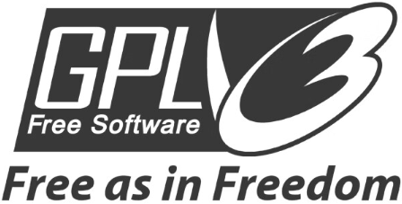
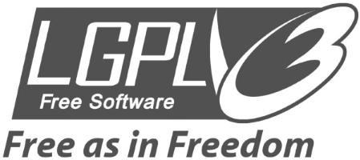
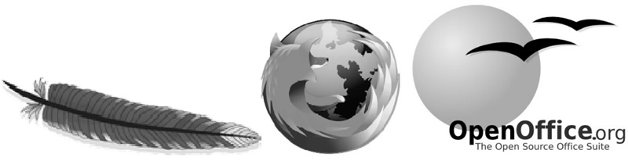

首页 > 编程笔记
GNU计划到底是怎么回事？
GNU 计划又译为革奴计划，“GNU”源于“GNU is Not UNIX”的递归缩写。这项计划的目标是创建一套完全自由的操作系统。
我们将时间线拉回到 1979 年。在 1979 年，AT&T 公司收回了 UNIX 的版权，并且将 UNIX 打造成商品进行售卖，价格非常昂贵。
而且当时不仅操作系统如此，由操作系统衍生出来的软件也是一样，在那个软件逐渐商业化的年代，越来越多的软件被打造成商品进行售卖。
麻省理工学院的一位职业黑客逐渐忍受不了操作系统和软件的商业化转变，他认为私藏源代码是一种违反人性的罪恶行为，分享源代码可以让原创作者和所有参与者都受益良多，他立志要把运行、复制、发布、研究和改进软件的权利重新赋予世界上的每一个人。
1983 年，他在 net.unix-wizards 新闻组上公开发布了 GNU 计划，并附带了一份《GNU宣言》，这个计划的 Logo 是一头非洲牛羚，如图1所示。
图1：GNU 计划的 Logo
这个著名的黑客名为 Richard Matthew Stallman，他被人们称为自由软件运动的精神领袖，同时也是自由软件基金会（Free Software Foundation）的创立者。
GNU 计划的软件开发工作于 1984 年开始，称为 GNU 工程。GNU 的许多软件程序是在 GNU 工程下发布的，我们称之为“GNU软件包”。
1985 年，为了更好地实施 GNU 计划，自由软件基金会应运而生，该基金会的主要工作就是执行 GNU 计划，开发更多的自由软件，同时该基金会赋予软件使用者4项基本自由：
1989 年，Richard Matthew Stallman 与自由软件基金会的律师共同起草了《GNU 通用公共协议证书》，也就是 GPL 协议，用此协议来保证 GNU 计划中所有软件的自由性。
到了 1990 年，自由软件基金会已经初具规模，同时也出现了许多优秀的软件，仅 Richard Matthew Stallman 自己就开发了 Emacs、GCC、GDB 等著名软件，世界各地被激励的黑客们也编写了大量的自由软件。
说到这里，各位可能发现了一个问题：咦？怎么只有软件，不是说要创建一个完全自由的、完整的、类似 UNIX 的操作系统嘛，只有软件而没有内核，能叫完整的操作系统？
其实 Richard Matthew Stallman 并没有忘记这个初衷，他们也开发了一款叫 Hurd 的内核，但是正在开发的这个 Hurd 内核不论是工程进度还是所具备的功能都没有达到预期效果，当时自由软件基金会汇集了很多的软件，但是迟迟没能开发出满意的内核，没有内核就组不成一套完整的操作系统，这种尴尬的状态一直持续到 1991 年，这一年发生的事情相信大家都清楚，那就是 Linux 内核在网上公开发布。
在 Linux 内核公开发布时，GNU 工程已经几乎完成了除系统内核之外的各种必备软件的开发，到了这个时候，系统开发和软件开发两条时间线就已经开始重合了。
1992 年，在 Linus Benedict Torvalds 和世界各地的程序员、黑客们的共同努力下，Linux 内核成功与自由软件基金会下数以百计的软件工具相结合，完全自由的操作系统正式诞生了！
由于 Linux 内核使用了许多 GNU 软件，GNU 计划的开创者 Richard Matthew Stallman 提议将 Linux 操作系统更名为“GNU/Linux”，但是绝大多数人还是习惯称为“Linux”。
在整个 GNU 计划的发展史中，有两个协议（GPL、LGPL）非常重要，对它们必须了解清楚。
GPL 协议的特点是具有“传染性”，该协议规定，只要软件中包含了遵循 GPL 协议的产品或代码，该软件就必须也遵循 GPL 许可协议。
打个比方就是，我若是遵循了 GPL 许可协议，我未来的子子孙孙也必须遵循，因此这个协议并不适用于商用软件。GPL 协议的图标如图2所示。
GPL 协议的出发点是源代码的开源和免费引用以及修改后衍生代码的开源和免费引用，不允许修改后将衍生的源代码作为闭源的商业软件进行发布和销售。GPL 开源协议的特点见表1。
LGPL 协议是 GPL 协议的变种，也是 GNU 为了得到更多商用软件开发商的支持而提出的。与 GPL 的最大不同就是，LGPL 协议授权的自由软件可以私有化，而不必公布全部源代码。
LGPL 协议的图标如图3所示。
到现在为止，开源精神已经蔓延至全球，国内国外出现了许许多多的开源社区，比较著名的有 GitHub、Gitee、开源中国社区、MySQL 社区等。
随着各种开源社区的出现，开源软件也借着这股东风发展起来了，著名的开源软件有 Apache、火狐浏览器、OpenOffice、Nginx、MariaDB 等，其中前三者的 Logo 如图4所示。
至此，GNU 计划的内容就讲完了。
我们将时间线拉回到 1979 年。在 1979 年，AT&T 公司收回了 UNIX 的版权，并且将 UNIX 打造成商品进行售卖，价格非常昂贵。
而且当时不仅操作系统如此，由操作系统衍生出来的软件也是一样，在那个软件逐渐商业化的年代，越来越多的软件被打造成商品进行售卖。
麻省理工学院的一位职业黑客逐渐忍受不了操作系统和软件的商业化转变，他认为私藏源代码是一种违反人性的罪恶行为，分享源代码可以让原创作者和所有参与者都受益良多，他立志要把运行、复制、发布、研究和改进软件的权利重新赋予世界上的每一个人。
1983 年，他在 net.unix-wizards 新闻组上公开发布了 GNU 计划，并附带了一份《GNU宣言》，这个计划的 Logo 是一头非洲牛羚，如图1所示。
图1：GNU 计划的 Logo
这个著名的黑客名为 Richard Matthew Stallman，他被人们称为自由软件运动的精神领袖，同时也是自由软件基金会（Free Software Foundation）的创立者。
GNU 计划的软件开发工作于 1984 年开始，称为 GNU 工程。GNU 的许多软件程序是在 GNU 工程下发布的，我们称之为“GNU软件包”。
1985 年，为了更好地实施 GNU 计划，自由软件基金会应运而生，该基金会的主要工作就是执行 GNU 计划，开发更多的自由软件，同时该基金会赋予软件使用者4项基本自由：
- 不论目的为何，有运行软件的自由；
- 有研究该软件如何工作和按需改写软件的自由，取得该软件源代码是达成此目的的前提；
- 有重新发布拷贝的自由；
- 有向公众发布软件改进版的自由。
1989 年，Richard Matthew Stallman 与自由软件基金会的律师共同起草了《GNU 通用公共协议证书》，也就是 GPL 协议，用此协议来保证 GNU 计划中所有软件的自由性。
到了 1990 年，自由软件基金会已经初具规模，同时也出现了许多优秀的软件，仅 Richard Matthew Stallman 自己就开发了 Emacs、GCC、GDB 等著名软件，世界各地被激励的黑客们也编写了大量的自由软件。
说到这里，各位可能发现了一个问题：咦？怎么只有软件，不是说要创建一个完全自由的、完整的、类似 UNIX 的操作系统嘛，只有软件而没有内核，能叫完整的操作系统？
其实 Richard Matthew Stallman 并没有忘记这个初衷，他们也开发了一款叫 Hurd 的内核，但是正在开发的这个 Hurd 内核不论是工程进度还是所具备的功能都没有达到预期效果，当时自由软件基金会汇集了很多的软件，但是迟迟没能开发出满意的内核，没有内核就组不成一套完整的操作系统，这种尴尬的状态一直持续到 1991 年，这一年发生的事情相信大家都清楚，那就是 Linux 内核在网上公开发布。
在 Linux 内核公开发布时，GNU 工程已经几乎完成了除系统内核之外的各种必备软件的开发，到了这个时候，系统开发和软件开发两条时间线就已经开始重合了。
1992 年，在 Linus Benedict Torvalds 和世界各地的程序员、黑客们的共同努力下，Linux 内核成功与自由软件基金会下数以百计的软件工具相结合，完全自由的操作系统正式诞生了！
由于 Linux 内核使用了许多 GNU 软件，GNU 计划的开创者 Richard Matthew Stallman 提议将 Linux 操作系统更名为“GNU/Linux”，但是绝大多数人还是习惯称为“Linux”。
在整个 GNU 计划的发展史中，有两个协议（GPL、LGPL）非常重要，对它们必须了解清楚。
GPL
GPL 是 GNU General Public License（GNU 通用公共许可证）的缩写。GPL 协议的特点是具有“传染性”，该协议规定，只要软件中包含了遵循 GPL 协议的产品或代码，该软件就必须也遵循 GPL 许可协议。
打个比方就是，我若是遵循了 GPL 许可协议，我未来的子子孙孙也必须遵循，因此这个协议并不适用于商用软件。GPL 协议的图标如图2所示。
GPL 协议的出发点是源代码的开源和免费引用以及修改后衍生代码的开源和免费引用，不允许修改后将衍生的源代码作为闭源的商业软件进行发布和销售。GPL 开源协议的特点见表1。

图2：GPL 协议的图标
图2：GPL 协议的图标
| 特 点 | 说 明 |
|---|---|
| 自由使用 | 允许自由地按自己的意愿使用软件。 |
| 自由修改 | 允许自由地按自己的需要修改软件，但修改后的软件必须也是基于 GPL 协议授权的。 |
| 自由传播 | 允许自由地把软件和源代码分享给其他人；允许自由地分享自己对软件源代码的修改。 |
| 收费自由 | 允许在各种媒介上出售，但必须提前让买家知道软件可以被免费获取。 |
LGPL
LGPL 是 GNU Lesser General Public License（GNU 宽通用公共许可证）的缩写。LGPL 协议是 GPL 协议的变种，也是 GNU 为了得到更多商用软件开发商的支持而提出的。与 GPL 的最大不同就是，LGPL 协议授权的自由软件可以私有化，而不必公布全部源代码。
LGPL 协议的图标如图3所示。

图3：LGPL 协议的图标
图3：LGPL 协议的图标
到现在为止，开源精神已经蔓延至全球，国内国外出现了许许多多的开源社区，比较著名的有 GitHub、Gitee、开源中国社区、MySQL 社区等。
随着各种开源社区的出现，开源软件也借着这股东风发展起来了，著名的开源软件有 Apache、火狐浏览器、OpenOffice、Nginx、MariaDB 等，其中前三者的 Logo 如图4所示。

图4：部分开源软件的 Logo
图4：部分开源软件的 Logo
至此，GNU 计划的内容就讲完了。
关注公众号「站长严长生」，在手机上阅读所有教程，随时随地都能学习。内含一款搜索神器，免费下载全网书籍和视频。

微信扫码关注公众号